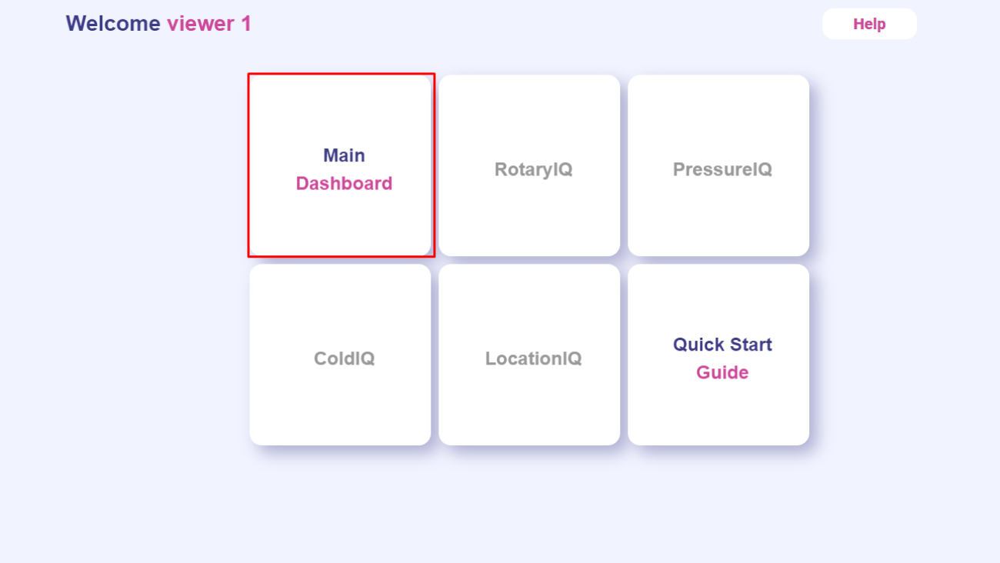

Getting Started with IoTLogIQ
Customer Dashboard
This tutorial’s goal is to demonstrate the basic usage of the most
popular IOTLogIQ’s Customer Dashboard.

1-Map Panel
Located on the top right corner of the dashboard, you will be able
to create, edit, or drag and drop markers (if permissions enable
it).

2- Area and Assets floor pan Panel
When an asset, area, or device is selected, this panel will render
the map/image attached to it along with its respective markers.

-Markers in this section can be edited or removed.
-Additional Markers can be added.
-Images attached can be changed.
3- Device Panel
You can access all information about the devices by clicking on
the details button on the Device section.
Depending on the device profile, you will be redirected to a
different dashboard with different specifications and graphics
about its measurements.

You can access the alarms for the devices by clicking on the
alarm button on the top-left section.